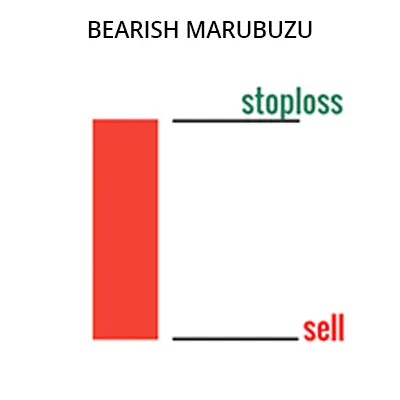

Das bärische Marubozu-Muster ist ein Handelsmuster, das auf das Fehlen eines Aufwärtstrends im Markt und
das Vorhandensein eines Abwärtstrends hinweist. Dieses Muster wird durch einen großen, langkörprigen
Kerzenhalter gebildet, der den gleichen Eröffnungs- und Schlusskurs hat.